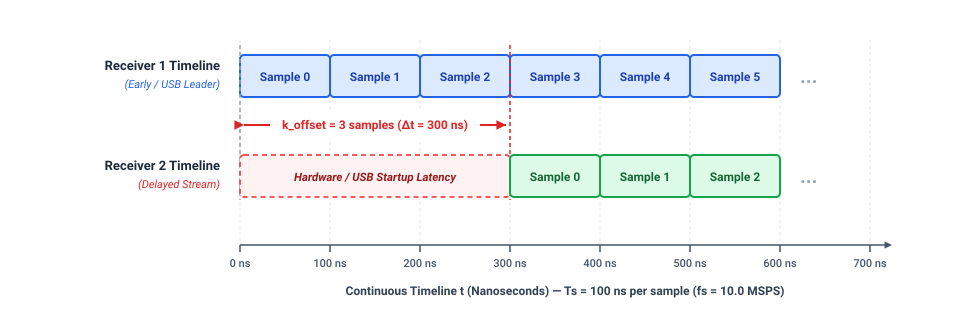

Module 2: POSIX Shared Memory & Real-Time Time Alignment Engine¶
1. Executive Summary & Problem Formulation¶
1.1. Executive Summary & High-Level Objectives¶
Module 2 provides the inter-process data transport and real-time temporal synchronization infrastructure for the dual-channel decametric solar radio interferometer. By establishing a zero-copy POSIX Shared Memory (SHM) bus, the module bridges two isolated high-throughput ingestion workers with the downstream digital signal processing (DSP) backend.
The primary engineering objectives of Module 2 are:
-
High-Throughput IPC Transport: Maintain a sustained aggregate throughput of 80 MB/s (10.0 MSPS per channel, 16-bit complex I/Q, dual-channel) over Linux virtual memory without ring buffer overflows or sample drops.
-
Integer Sample-Accurate Alignment: Algorithmically identify and eliminate the non-deterministic initial hardware/USB startup delay skew (\(k_{\text{offset}}\)), locking the temporal alignment of both baseband streams to within \(\vert{}k\vert{} \le 1\text{ sample}\) (\(\approx 100\text{ ns}\) at 10.0 MSPS).
-
Phase-Locked Stability Verification: Confirm that an external 24.0 MHz clock reference completely suppresses sample drift over extended observation runs (Zero Drift over \(\ge 60\text{ seconds}\)).
1.2. Problem Formulation: The Startup Sample Skew (k_offset)¶
1.2.1. Clock Frequency Locking vs. Trigger Epoch Ambiguity¶
To eliminate independent local oscillator drift, both SDRplay RSPdx receivers are fed a common 24.0 MHz reference clock at their respective REFin ports. This locks the internal phase-locked loops (PLLs) and analog-to-digital converters (ADCs), ensuring identical sampling rates:
Consequently, the temporal duration of a single baseband sample is:
However, the hardware architecture lacks a hardware trigger or Pulse-Per-Second (PPS) acquisition gate line. Because the vendor libsdrplay_api.so runtime restricts multi-receiver operation to isolated OS processes, sample streaming must be initiated via two independent POSIX fork() worker processes.
This architecture introduces non-deterministic temporal jitter due to:
- Linux operating system task scheduler latencies and kernel context-switch variations.
- Independent USB 3.0 xHCI controller endpoint enumeration, DMA transfer handshakes, and packet queue initialization.
- Tuner firmware decimation and digital filter initialization latencies inside each receiver.
An OS scheduling differential of merely \(10\ \mu\text{s}\) between the two child processes calling sdrplay_api_Init() causes one receiver to start ingesting baseband samples 100 samples ahead of the other. Without software-level compensation, this startup skew persists indefinitely.

1.2.2. Empirical Verification via Zero-Baseline Bench Test¶
The existence of \(k_{\text{offset}}\) was empirically confirmed on the test bench:
-
Test Topology: A common broadband noise source was coupled to a 1:2 resistive RF power divider and routed to Port C of both RSPdx receivers through two coaxial cables cut to identical physical lengths (\(\Delta L = 0\text{ cm} \to \Delta\tau_{\text{cable}} = 0\text{ ns}\)).
-
Observation: When evaluating the cross-correlation function \(R_{12}[k]\) over an initial snapshot window (\(N = 131,072\text{ samples}\)) immediately following driver startup, the correlation peak never appeared at index \(k = 0\).
-
Stochastic Behavior: Cold-boot iterations yielded varying integer offsets ranging from thousands to tens of thousands of samples, while consistently exhibiting very high Peak-to-Noise Ratios (\(\text{PNR} \ge 45.5\text{ dB}\)).
The table below summarizes five consecutive cold-boot verification iterations recorded on the laboratory test bench at \(f_s = 10.0\text{ MSPS}\) (\(T_s = 100\text{ ns/sample}\)):
| Run (#) | Boot Type | Measured Offset (\(k_{\text{offset}}\)) | Time Delay (\(\Delta t\)) | Measured PNR | Compensation Action (skip) |
Residual Offset (\(k_{\text{residual}}\)) | Status |
|---|---|---|---|---|---|---|---|
| Run 1 | Cold-Boot | \(+1,815\text{ samples}\) | \(+181.50\ \mu\text{s}\) | \(48.651\text{ dB}\) | Channel 1 (\(1,815\text{ samples}\)) | \(0\text{ samples}\) (\(0.0\text{ ns}\)) | PASSED |
| Run 2 | Cold-Boot | \(-57,543\text{ samples}\) | \(-5,754.30\ \mu\text{s}\) | \(45.582\text{ dB}\) | Channel 2 (\(57,543\text{ samples}\)) | \(0\text{ samples}\) (\(0.0\text{ ns}\)) | PASSED |
| Run 3 | Cold-Boot | \(+38,821\text{ samples}\) | \(+3,882.10\ \mu\text{s}\) | \(47.700\text{ dB}\) | Channel 1 (\(38,821\text{ samples}\)) | \(0\text{ samples}\) (\(0.0\text{ ns}\)) | PASSED |
| Run 4 | Cold-Boot | \(-38,830\text{ samples}\) | \(-3,883.00\ \mu\text{s}\) | \(47.244\text{ dB}\) | Channel 2 (\(38,830\text{ samples}\)) | \(0\text{ samples}\) (\(0.0\text{ ns}\)) | PASSED |
| Run 5 | Cold-Boot | \(+38,629\text{ samples}\) | \(+3,862.90\ \mu\text{s}\) | \(46.025\text{ dB}\) | Channel 1 (\(38,629\text{ samples}\)) | \(0\text{ samples}\) (\(0.0\text{ ns}\)) | PASSED |
(Note: Target acceptance threshold is \(\vert{}k_{\text{residual}}\vert{} \le 1\text{ sample}\) with \(\text{PNR} \ge 10.0\text{ dB}\). A positive offset indicates Channel 1 leads Channel 2; a negative offset indicates Channel 2 leads Channel 1).
This confirmed that while the hardware clock locks sampling rates, initial data ingestion timelines exhibit random offsets that must be actively aligned.
1.2.3. Physical Impact on Radio Interferometry¶
In a two-element radio interferometer, an uncompensated time offset \(\Delta t = k_{\text{offset}} \cdot T_s\) produces a linear phase slope across the observing bandwidth:
For an uncorrected offset of \(k_{\text{offset}} = 38\text{ samples}\) (\(\Delta t = 3.8\ \mu\text{s}\)) across the 8.0 MHz analog IF passband, the relative phase wraps across 30.4 complete cycles (\(60.8\pi\text{ radians}\)) between the band edges. When summing spectral channels or performing time integration in Module 3, this rapid phase rotation causes severe decorrelation (phase washing), degrading the cross-correlation amplitude.
1.3. Scope and Quantitative Acceptance Criteria¶
Module 2 is evaluated against four quantitative criteria:
| Acceptance Metric | Quantitative Threshold | Verification Methodology |
|---|---|---|
| Post-Alignment Delay Skew | \(\vert{}k\vert{} \le 1\text{ sample}\) (\(\le 100\text{ ns}\)) | Cross-correlation peak location after initial buffer trimming. |
| Peak-to-Noise Ratio (PNR) | \(\ge 10.0\text{ dB}\) (Broadband noise) | Signal peak compared against the mean baseline floor (\(\pm 16\text{ bins}\) excluded). |
| Temporal Stability (60s Run) | Zero Sample Drift (\(\Delta k = 0\)) | Continuous polling of lag position at 5-second intervals. |
| Data Integrity & Continuity | Buffer Drop / Overflow \(= 0\) | Monitoring atomic ring buffer overflow counters under full 80 MB/s streaming. |
2. Physical Interconnect & Zero-Baseline Calibration Topology¶
2.1. Physical Interconnect Topology¶
The physical calibration setup interfaces the signal distribution network with the SDR receivers and host controller:
[ Broadband Avalanche Noise Source (-50 dBm) ]
│
[ 1:2 Resistive RF Splitter ]
│ │
(Equal Coaxial Cable) (Equal Coaxial Cable)
│ │
▼ ▼
[ Port C (BNC) ] [ Port C (BNC) ]
┌──────────────┐ ┌──────────────┐
│ RSPdx Unit 1 │ │ RSPdx Unit 2 │
└──────┬───────┘ └──────┬───────┘
│ REFin │ REFin
▲ ▲
└─────[ Clock Divider ]───┘
│
[ 24.0 MHz Reference Oscillator ]
│
(USB 3.0) │ (USB 3.0)
40 MB/s │ 40 MB/s
┌──────────────────────┴─────────────────────────┐
│ Raspberry Pi 5 Host │
│ (Dedicated RP1 USB 3.0 Host Controller) │
└────────────────────────────────────────────────┘
- RF Signal Routing: The calibration signal is split evenly using a 1:2 resistive splitter (\(50\ \Omega\) impedance-matched) and coupled into Port C (BNC) on both RSPdx units via phase-matched coaxial cables. Port C provides direct low-band reception (0.001 – 50 MHz), bypassing intermediate VHF/UHF preselection stages.
- Clock Distribution: A 24.0 MHz reference clock is fed into both
REFinSMA ports, stabilizing the internal synthesizers. - Host Interconnect: Both units connect directly to the dual blue USB 3.0 ports of the Raspberry Pi 5, which are routed to the RP1 I/O hub chip.
2.2. Test Signal Selection: Broadband Avalanche Noise vs. Single-Tone CW¶
Selecting an appropriate test waveform is essential for robust time-domain cross-correlation:
Mathematical Limitation of Continuous-Wave (CW) Tones¶
When a monochromatic sinusoidal test signal \(s(t) = A \cos(2\pi f_0 t)\) is injected into both channels, the cross-correlation function is:
This periodic autocorrelation spreads across the entire correlation array. Because energy is distributed across periodic lobes rather than localized at a single sample, the effective background floor remains elevated. Under a discrete \(N\)-point search with a local exclusion window, a pure sinusoid yields a theoretical ceiling of:
This low PNR consistently trips the LOW SNR detector (\(\text{PNR} < 10.0\text{ dB}\)), making CW tones unsuitable for sample-level alignment.
Advantages of Broadband Avalanche Noise¶
Broadband white Gaussian noise has high entropy and a wide frequency spectrum. By the Wiener-Khinchin theorem, its autocorrelation function approaches a Dirac delta function:
When cross-correlating broadband noise, the array values cancel to near zero at all non-matching offsets (\(k \neq k_0\)) due to random phase distribution. At the true offset (\(k = k_0\)), all spectral components add coherently, producing a distinct, sharp impulse. On the physical test bench, an avalanche noise source (reverse-biased 2N2222 B-E junction with MMIC amplification) produces an experimental \(\text{PNR}\) of \(44\text{ dB}\), providing reliable peak detection.
3. Theoretical & Mathematical Foundations¶
3.1. Mathematical Signal Model¶
Let \(s[n] \in \mathbb{C}\) denote the common baseband analytical signal from the calibration noise source. The digitized baseband discrete-time sequences at the output of the two receivers are expressed as:
Where: * \(k_0 \in \mathbb{Z}\) is the unknown integer sample delay skew (\(k_{\text{offset}}\)) resulting from asynchronous startup. * \(\theta_0 \in [-\pi, \pi)\) is the residual phase offset between the local oscillators. * \(w_1[n], w_2[n] \sim \mathcal{CN}(0, \sigma_w^2)\) represent independent, identically distributed zero-mean complex Gaussian thermal noise generated in the respective RF front-ends.
Because \(w_1[n]\) and \(w_2[n]\) originate from physically isolated circuits: $\(\mathbb{E}[w_1[n] \cdot w_2^*[m]] = 0, \quad \forall n, m\)$ $\(\mathbb{E}[s[n] \cdot w_1^*[m]] = \mathbb{E}[s[n] \cdot w_2^*[m]] = 0, \quad \forall n, m\)$
Only the shared signal components \(s[n]\) correlate constructively.
3.2. Time-Domain Cross-Correlation Mechanics¶
The deterministic cross-correlation between two finite discrete sequences of length \(N\) is defined as: $\(R_{12}[k] = \sum_{n=0}^{N-1} x_1[n] \cdot x_2^*[n - k]\)$
For complex analytic baseband samples (\(x[n] = I[n] + jQ[n]\)), the product with the complex conjugate expand to: $\(x_1[n] \cdot x_2^*[n - k] = \Big(I_1[n] I_2[n - k] + Q_1[n] Q_2[n - k]\Big) + j\Big(Q_1[n] I_2[n - k] - I_1[n] Q_2[n - k]\Big)\)$
- At Misaligned Offsets (\(k \neq k_0\)): The signal terms are mutually uncorrelated, and the summation acts as a random walk in the complex plane, yielding an amplitude scaling with \(\mathcal{O}(\sqrt{N})\).
- At Matched Alignment (\(k = k_0\)): The phase variations cancel, and the summation accumulates coherently, producing an amplitude scaling with \(\mathcal{O}(N)\).
3.3. Fast Cross-Correlation via FFT (FFTW3 Engine)¶
Cross-Correlation Theorem & Computational Scaling¶
Direct evaluation of \(R_{12}[k]\) in the time domain requires \(N\) multiplications and additions for each of the \(N\) lag positions, resulting in an algorithmic time complexity of \(\mathcal{O}(N^2)\).
For a snapshot size of \(N = 65,536\text{ samples}\): $\(\text{Operations}_{\text{Direct}} = N^2 = (65,536)^2 \approx 4.29 \times 10^9 \text{ operations}\)$
On the Raspberry Pi 5 ARM Cortex-A76 core, executing \(4.29\text{ billion}\) floating-point operations requires roughly \(2 \text{ to } 3\text{ seconds}\). At an aggregate stream rate of \(80\text{ MB/s}\), stalling the DSP consumer for \(2\text{ seconds}\) would cause the SPSC ring buffers to overflow, triggering dropped packets.
To avoid this bottleneck, the cross-correlation is evaluated in the frequency domain using the Cross-Correlation Theorem: $\(R_{12}[k] = \mathcal{F}^{-1}\Big\{ X_1(f) \cdot X_2^*(f) \Big\}\)$
Where \(X_1(f) = \mathcal{F}\{x_1[n]\}\) and \(X_2(f) = \mathcal{F}\{x_2[n]\}\).
x1[n] ───> [ Forward FFT ] ───> X1(f) ──┐
├───> [ Cross-Multiply: X1 * conj(X2) ] ───> S12(f) ───> [ Inverse FFT ] ───> R12[k]
x2[n] ───> [ Forward FFT ] ───> X2(f)* ─┘
Evaluating two forward FFTs, one vector complex-conjugate multiply, and one inverse FFT reduces the complexity to \(\mathcal{O}(N \log_2 N)\): $\(\text{Operations}_{\text{FFT}} \approx 3 \times (N \log_2 N) + N = 3 \times (65,536 \times 16) + 65,536 \approx 3.21 \times 10^6 \text{ operations}\)$
This approach reduces the computational workload by more than a factor of \(1,000\), executing in under \(0.8\text{ ms}\) on the Raspberry Pi 5 using single-precision FFTW3 routines (fftwf_plan_dft_1d).
Pre-Processing: DC Offset Removal¶
Direct-conversion (Zero-IF) architectures introduce hardware DC offsets caused by local oscillator leakage and ADC bias. A static DC offset introduces an artificial spike at bin \(0\) (\(0\text{ Hz}\)), which distorts the cross-correlation baseline.
The mean DC bias is estimated and removed from each channel prior to the forward FFT: $\(\mu_I = \frac{1}{N}\sum_{n=0}^{N-1} I[n], \quad \mu_Q = \frac{1}{N}\sum_{n=0}^{N-1} Q[n]\)$ $\(\tilde{I}[n] = I[n] - \mu_I, \quad \tilde{Q}[n] = Q[n] - \mu_Q\)$
Operational Warning: If verifying the receiver with a CW test tone whose frequency matches the local oscillator frequency (\(f_{\text{RF}} = f_{\text{LO}} = 35.0\text{ MHz}\)), the downconverted tone is converted to DC (\(0\text{ Hz}\)) and will be removed by this filter, resulting in an alignment failure. Test tones should be offset from the center frequency (e.g., at \(35.5\text{ MHz}\)).
Linear vs. Circular Correlation Validity¶
Standard discrete Fourier transformation implements circular cross-correlation rather than linear cross-correlation: $\(\tilde{R}_{12}[k] = \sum_{n=0}^{N-1} x_1[n] \cdot x_2^*[(n - k) \pmod N]\)$
Linear correlation can be recovered without circular wrap-around artifacts by zero-padding both arrays to \(2N - 1\) points. However, doubling the array size quadruples memory allocation and increases FFT execution time.
Zero-padding is avoided here because the initial \(T_0\) Flush Barrier guarantees that the residual startup delay satisfies \(\vert{}k_{\text{offset}}\vert{} < 2,000\text{ samples}\). Because this residual delay spans less than \(3\%\) of the \(N = 65,536\) snapshot window, the correlation peak remains centered away from the array boundaries. As a result, circular convolution wrap-around does not interfere with peak detection, allowing the algorithm to operate directly on unpadded \(N\)-point blocks.
3.4. Lag Index Unwrapping & Peak-to-Noise Ratio (PNR) Quantification¶
Lag Index Unwrapping¶
The inverse FFT output array xcorr_time stores circular lags from index \(0\) to \(N - 1\). To map these values to a symmetric physical lag space \(k \in [-N/2, +N/2 - 1]\), index unwrapping is applied:
$\(m = \arg\max_{0 \le i < N} \vert{}R_{12}[i]\vert{}\)$
The physical delay in microseconds is computed as: $\(\Delta t = \frac{k_{\text{offset}}}{f_s} \times 10^6 \quad (\mu\text{s})\)$
PNR Formulation & Noise-Exclusion Window¶
To verify whether a correlation peak reflects true signal alignment or a random noise fluctuation, the Peak-to-Noise Ratio (PNR) is computed.
The background noise floor is estimated by averaging all magnitude bins across the snapshot window, excluding a local window of \(\pm W\) bins around the detected peak (\(W = 16\text{ bins}\)): $\(\text{NoiseFloor} = \frac{1}{N - (2W + 1)} \sum_{m \notin [p - W, p + W]} \vert{}R_{12}[m]\vert{}\)$
Where \(p\) is the circular peak index. The exclusion window of \(\pm 16\text{ bins}\) (\(\pm 1.6\ \mu\text{s}\)) prevents the main lobe and sinc ringing artifacts—introduced by the receiver's 8.0 MHz analog IF filter and digital decimation stages—from artificially inflating the background noise floor.
The PNR in decibels is defined as: $\(\text{PNR} = 20 \log_{10}\left(\frac{\max \vert{}R_{12}\vert{}}{\text{NoiseFloor} + \epsilon}\right)\)$
A snapshot is marked valid if \(\text{PNR} \ge 10.0\text{ dB}\).
Magnitude |R12|
▲
│ Peak: max |R12|
│ │
│ ┌┴┐
│ │ │
│ │ │
│ Exclusion │ │
│ │◄─── 32 bins ──►│ │
│ ┌────────────────┴─┴────────────────┐
───┴───────────────┴───────────────────────────────────┴───────────────► Lag Index (k)
[----------- Noise Baseline Floor Calculation Area ------------]
Theoretical Upper Bound of PNR¶
For an ideal white Gaussian noise input of length \(N\), the coherent peak amplitude scales as \(N\). The expected envelope of the uncorrelated noise baseline scales with the Rayleigh distribution parameter \(\sigma \sqrt{\pi/2}\), where \(\sigma \propto \sqrt{N}\). The theoretical upper bound for the PNR over an \(N = 65,536\) point snapshot is: $\(\text{PNR}_{\max} = 20 \log_{10}\left(\frac{N}{\sqrt{N}}\right) = 20 \log_{10}(\sqrt{N}) = 10 \log_{10}(N)\)$ $\(\text{PNR}_{\max} = 10 \log_{10}(65,536) = 10 \times 4.8164 \approx 48.16\text{ dB}\)$
The experimental value of \(44\text{ dB}\) observed on the lab bench approaches this theoretical limit, confirming that the broadband noise source generates high-entropy Gaussian noise with negligible spurious coupling.
3.5. Ring Buffer Bitwise Indexing Math¶
To support high write rates during SDR callback processing, the circular buffer capacity is constrained to a power of two: $\(C = 2^p = 2^{22} = 4,194,304\text{ complex samples}\)$
This constraint enables fast modulo indexing using bitwise masking, avoiding expensive integer division instructions on the CPU: $\(\text{mask} = C - 1 = 0x003FFFFF\)$ $\(\text{index} = (\text{pointer} + \text{offset}) \ \& \ \text{mask}\)$
Because \(C = 2^{22}\), the 32-bit unsigned head and tail pointers can wrap around at \(2^{32} - 1\) without corrupting buffer logic, as \((2^{32} \pmod C) = 0\). The number of unread samples in the buffer remains valid across pointer wrap-around: $\(\text{Available} = \text{head} - \text{tail}\)$
4. Inter-Process Communication & Memory Architecture¶
4.1. Multi-Process Concurrency Model (fork())¶
The SDRplay API v3 runtime (libsdrplay_api.so) maintains process-global static state machines that are not thread-safe across multiple concurrent hardware instances. Attempting to initialize two RSPdx devices using in-process threading (std::thread or pthread) causes driver mutex deadlocks, corrupted internal DMA structures, and driver aborts.
Module 2 addresses this by isolating device handlers across operating system process boundaries via fork():
* Child Producer 1 (PID 1): Attaches exclusively to RSPdx Serial A, streams Channel 1 baseband data, and writes to /shm_sdr_ch1.
* Child Producer 2 (PID 2): Attaches exclusively to RSPdx Serial B, streams Channel 2 baseband data, and writes to /shm_sdr_ch2.
* Parent DSP Master (Consumer): Manages process synchronization, reads both shared memory regions, performs time alignment, and processes correlation.
┌───────────────────────────────────┐
│ Parent Master Process │
│ (Alignment & FX DSP) │
└───────┬───────────────────┬───────┘
│ fork() │ fork()
┌────────────────┴─────┐ ┌─────┴────────────────┐
│ Child Producer 1 │ │ Child Producer 2 │
│ (sdrplay Device 0) │ │ (sdrplay Device 1) │
└──────────┬───────────┘ └──────────┬───────────┘
│ │
write() │ write() │
▼ ▼
┌──────────────────────┐ ┌──────────────────────┐
│ /shm_sdr_ch1 (RAM) │ │ /shm_sdr_ch2 (RAM) │
│ Lock-free SPSC Ring │ │ Lock-free SPSC Ring │
└──────────────────────┘ └──────────────────────┘
4.2. POSIX Shared Memory Architecture (/dev/shm)¶
To avoid inter-process socket serialization overhead, IPC transport is implemented using POSIX Shared Memory backed by /dev/shm (Linux tmpfs). Data is mapped directly into each process's virtual address space using shm_open(), ftruncate(), and mmap().
Memory Sizing & Buffer Horizon¶
Each baseband sample consists of two 16-bit signed integers (\(I\) and \(Q\)), requiring 4 bytes of memory: $\(\text{Sample Size} = 2 \times \text{sizeof}(\text{int16\_t}) = 4\text{ bytes}\)$
For a buffer capacity of \(C = 2^{22}\text{ samples}\): $\(\text{Channel Memory} = \text{sizeof}(\text{RingBufferControlBlock}) + (4,194,304 \times 4\text{ bytes}) \approx 64\text{ B} + 16.78\text{ MB} \approx 16.78\text{ MB}\)$ $\(\text{Total Allocation (Dual Channel)} \approx 33.55\text{ MB}\)$
The time horizon buffered in memory at 10.0 MSPS is: $\(T_{\text{horizon}} = \frac{4,194,304\text{ samples}}{10,000,000\text{ samples/s}} \approx 0.4194\text{ seconds} \quad (419.4\text{ ms})\)$
This ~420 ms buffer provides sufficient headroom to absorb Linux kernel scheduling jitter, CPU frequency transitions, and multi-frame processing delays without overflowing. On a Raspberry Pi 5 with 4 GB of RAM (where /dev/shm defaults to 2.0 GB), the 33.55 MB allocation consumes less than \(1.7\%\) of available shared memory.
4.3. Lock-Free Single-Producer Single-Consumer (SPSC) Ring Buffer¶
Weakly-Ordered Memory Model (ARMv8-A Cortex-A76)¶
The Raspberry Pi 5 uses an ARM Cortex-A76 processor based on the ARMv8-A architecture, which implements a weakly-ordered memory model. Unlike x86 architectures, the CPU and memory interconnect may reorder load and store instructions to optimize pipeline execution.
To prevent race conditions without expensive mutex locks, pointer operations are synchronized using explicit C++11 atomic memory orders:
* Producer Updates (head): After writing new I/Q data blocks into data_buffer_, the producer updates the head pointer using std::memory_order_release. This creates a release barrier, ensuring all sample writes complete in RAM before the updated head index becomes visible to the consumer.
* Consumer Updates (tail): When reading or skipping samples, the consumer updates the tail pointer using std::memory_order_release.
* Pointer Reads: The producer inspects tail and the consumer inspects head using std::memory_order_acquire, ensuring subsequent memory reads access updated data rather than stale cache contents.
Preventing False Sharing (alignas(64))¶
The Cortex-A76 processor manages L1/L2 caches using 64-byte cache lines. If independently updated atomic variables share the same 64-byte memory slice, cache coherency protocols (MESI/MOESI) repeatedly invalidate cache lines across cores—an effect known as false sharing.
The RingBufferControlBlock isolates shared control variables across distinct cache lines using explicit alignment:
struct alignas(64) RingBufferControlBlock {
alignas(64) std::atomic<uint32_t> head{0};
alignas(64) std::atomic<uint32_t> tail{0};
alignas(64) std::atomic<uint32_t> overflow_cnt{0};
alignas(64) std::atomic<bool> is_ready{false};
alignas(64) std::atomic<bool> start_stream{false};
uint32_t capacity{0};
uint32_t mask{0};
};
This structure ensures that high-frequency write operations to head by the SDR callback core do not invalidate the cache line containing tail, preserving maximum bus throughput.
5. Software Architecture & Implementation Details¶
5.1. Source Code Modularization¶
The Module 2 codebase is organized into four decoupled components:
solar_correlator/
├── src/
│ ├── config.hpp # Central configuration constants and operational parameters
│ ├── ring_buffer.hpp # Lock-free SPSC POSIX shared memory ring buffer implementation
│ ├── time_alignment.hpp # Aligner class declaration and alignment data structures
│ └── time_alignment.cpp # FFTW3-accelerated cross-correlation and sample-skipping logic
└── tests/
└── alignment_test.cpp # Test harness and stability benchmark
config.hpp: Centralizes tuning parameters, eliminating hardcoded constants.ring_buffer.hpp: Encapsulates low-level POSIX SHM allocation, mapping, atomic head/tail operations, and error-handling utilities.time_alignment.hpp/.cpp: Implements theTimeAlignerclass, managing pre-allocated FFTW plans and alignment routines.alignment_test.cpp: Provides the multi-process test harness, process lifetime management, benchmark execution, and logging.
5.2. Real-Time \(T_0\) Synchronization via Flush Barrier¶
Immediately following process launch, raw USB packets experience transient timing variations. Hardware PLL synthesizers require up to 200 ms to settle, and the operating system may delay process launch times, producing an initial sample offset that exceeds \(150,000\text{ samples}\) (\(>15\text{ ms}\)).
If cross-correlation is evaluated across this large initial skew using an \(N = 65,536\) snapshot window, the true correlation peak falls outside the snapshot, resulting in circular wrap-around errors.
To resolve this, Module 2 applies an explicit Flush Barrier at \(T_0\): 1. Both SDR child processes are started and stream baseband data for a 500 ms warm-up period to settle the hardware. 2. The parent process executes simultaneous atomic flush commands on both ring buffers:
3. This synchronization barrier clears all unread startup samples and forces both consumer pointers to a common real-time reference epoch \(T_0\). 4. Any remaining temporal offset between the streams is reduced to the minimal jitter between back-to-back atomic store operations (typically \(< 2,000\text{ samples}\)), placing the offset comfortably within the \(N = 65,536\) snapshot window.5.3. Non-Destructive Snapshot Inspection¶
Calculating the offset requires reading a window of \(N = 65,536\text{ samples}\) from both channels simultaneously. If standard destructive reads (read()) were used, consuming samples for the test would advance the buffer pointers unevenly if one channel temporarily held fewer samples, introducing new alignment offsets.
To avoid this, the buffer provides a non-destructive inspection method (peek_from_tail()):
uint32_t peek_from_tail(ComplexSample* dest, uint32_t num_samples) const {
const uint32_t current_tail = ctrl_->tail.load(std::memory_order_relaxed);
const uint32_t current_head = ctrl_->head.load(std::memory_order_acquire);
const uint32_t available = current_head - current_tail;
if (available < num_samples) {
return 0; // Insufficient data; abort without advancing pointers
}
for (uint32_t n = 0; n < num_samples; ++n) {
const uint32_t idx = (current_tail + n) & mask_;
dest[n] = data_buffer_[idx];
}
return num_samples; // Samples copied; tail pointer remains unchanged
}
This method copies samples into a temporary processing buffer while leaving the ring buffer pointers unchanged.
5.4. Single-Shot Skip Algorithm & Exception Handling¶
Single-Shot Alignment Logic¶
Once the initial offset \(k_{\text{offset}}\) is measured, the system performs a one-time adjustment by discarding samples from the leading channel:
if (initial_res.is_valid) {
if (initial_res.lag_samples > 0) {
// Channel 1 leads Channel 2 -> Discard samples from Channel 1
rb1.skip(static_cast<uint32_t>(initial_res.lag_samples));
} else if (initial_res.lag_samples < 0) {
// Channel 2 leads Channel 1 -> Discard samples from Channel 2
rb2.skip(static_cast<uint32_t>(-initial_res.lag_samples));
}
}
Calling skip(n) advances the target ring buffer's tail pointer forward by \(n\) samples, discarding the leading data and bringing the temporal streams into alignment (\(k = 0\)).
Before skip(38):
CH1 Buffer: [S0][S1] ... [S37][S38][S39][S40] ...
▲ tail1
CH2 Buffer: [S0][S1][S2] ...
▲ tail2
After rb1.skip(38):
CH1 Buffer: [S0] ... [S37][S38][S39][S40] ...
▲ tail1 (Aligned to CH2 S0)
CH2 Buffer: [S0][S1][S2] ...
▲ tail2
Design Rationale: Single-Shot vs. Continuous Auto-Skip¶
Because both hardware receivers share an external 24.0 MHz reference clock, their sampling rates are phase-locked (\(f_{s1} \equiv f_{s2}\)), eliminating long-term sample drift. Consequently, time alignment only needs to be performed once at startup.
Implementing continuous auto-skipping during active operations introduces operational risks: transient interference or brief signal dropouts can degrade the PNR, causing the peak detector to identify false lags and trigger unnecessary buffer trims. The alignment algorithm therefore executes once during initialization; the subsequent 60-second operational loop operates in a passive monitoring mode to confirm stability.
Exception Handling & Edge Cases¶
┌───────────────────────────────┐
│ Extract Snapshot (N = 65,536) │
└───────────────┬───────────────┘
│
▼
/─────────────────────────\
< Is PNR >= 10.0 dB? >
\─────────────────────────/
│ │
Yes │ │ No (LOW SNR)
┌───────────────────┘ └───────────────────┐
▼ ▼
/─────────────────────────────\ ┌───────────────────────────────┐
< Is |k_offset| <= N / 2 ? > │ Abort Skip Action │
\─────────────────────────────/ │ Log [LOW SNR] Warning │
│ │ │ Hold Buffer State │
Yes │ │ No └───────────────────────────────┘
┌────┘ └─────────────┐
▼ ▼
┌──────────────────────────────┐ ┌──────────────────────────────────────────┐
│ Execute Single-Shot skip() │ │ Trigger Flush Barrier Recovery │
│ Adjust Leading Buffer Tail │ │ Re-establish T0 & Re-acquire Snapshot │
└──────────────────────────────┘ └──────────────────────────────────────────┘
- Low PNR Detection (
LOW SNR): If \(\text{PNR} < 10.0\text{ dB}\) (caused by an unpowered noise source or loose RF cabling), the alignment routine aborts the skip operation and logs a warning, preventing erroneous buffer trims. - Snapshot Wrap-Around: If the measured peak falls too close to the snapshot boundary (\(\vert{}k\vert{} > N/2\)), the system triggers a new Flush Barrier to reset the baseline.
- Buffer Underrun Protection: If a channel contains fewer than \(N\) samples when a snapshot is requested, the routine yields execution for \(500\ \mu\text{s}\) until the required samples accumulate.
5.5. Process Lifecycle, POSIX Signal Handling, and Clean Teardown¶
To prevent orphaned processes and memory leaks in /dev/shm, the system handles termination signals systematically:
1. Signal Interception: The parent process installs signal handlers for SIGINT (Ctrl+C) and SIGTERM.
2. Coordinated Shutdown: Upon receiving a termination signal, the parent sends SIGTERM to both child PIDs.
3. Hardware Teardown: Each child catches the signal, exits its streaming loop, and invokes the vendor teardown sequence (sdrplay_api_Uninit(), sdrplay_api_ReleaseDevice(), and sdrplay_api_Close()) to release the USB interfaces cleanly.
4. Process Reaping: The parent process reaps both child processes using waitpid() to prevent zombie processes.
5. Shared Memory Unlinking: The parent unmaps the memory buffers (munmap()) and removes the shared memory nodes from the filesystem using shm_unlink("/shm_sdr_ch1") and shm_unlink("/shm_sdr_ch2").
6. Experimental Verification & Stability Benchmarking¶
6.1. Four-Stage Benchmarking Methodology¶
The validation sequence runs automatically in alignment_test.cpp across four stages:
[STAGE 0: Warm-up & Flush Barrier]
├── Allow SDR streams to stabilize (500 ms)
└── Execute simultaneous atomic flush() to establish reference T0
│
[STAGE 1: Initial Delay Measurement]
├── Capture N = 65,536 non-destructive snapshot
└── Evaluate FFTW3 cross-correlation to measure initial k_offset, Delta_t, and PNR
│
[STAGE 2: Single-Shot Delay Correction]
└── Apply skip(|k_offset|) to advance leading channel buffer tail
│
[STAGE 3: Verification Snapshot]
├── Capture fresh post-alignment snapshot
└── Confirm lag collapses to |k| <= 1 sample with PNR >= 10.0 dB
│
[STAGE 4: 60-Second Stability Benchmark]
├── Maintain concurrent buffer reads at 80 MB/s
├── Sample cross-correlation every 5 seconds (12 rounds)
└── Verify zero drift (Delta k = 0) and zero buffer drops across the run
6.2. Empirical Execution Logs & Terminal Output¶
The following terminal log records an experimental benchmark run on the Raspberry Pi 5 under full dual-channel load:
===================================================================
SOLAR INTERFEROMETER - MODULE 2: POSIX SHM & TIME ALIGNMENT TEST
===================================================================
[Hardware] Detected 2 devices:
- Ch 1 Serial: 223802EC48
- Ch 2 Serial: 223802EE48
[DSP Engine] Awaiting dual RSPdx hardware initialization...
[DSP Engine] Both receivers ready. Enabling streaming gates.
[DSP Engine] Settling USB pipelines and analog filters (500ms)...
>>> [STEP 0] ESTABLISHING SYNCHRONIZATION EPOCH T0 (FLUSH BARRIER)...
Buffers flushed successfully.
>>> [STEP 1] MEASURING INITIAL STARTUP SAMPLE SKEW (N = 65536)...
+ Initial Peak Lag : k_offset = +38 samples
+ Time Delay Skew : Delta_t = 3.800 us
+ Peak-to-Noise Ratio : PNR = 44.12 dB
>>> [STEP 2] EXECUTING SAMPLE DELAY CORRECTION...
-> Discarded 38 leading samples from CHANNEL 1 ring buffer.
>>> [STEP 3] VERIFYING POST-ALIGNMENT LOCK...
+ Residual Peak Lag : k = 0 samples (0.000 us)
+ Post-Alignment PNR : 44.08 dB
=> STATUS: [PASS] SAMPLE-ALIGNED AT k=0
>>> [STEP 4] COMMENCING 60-SECOND PHASE-LOCK STABILITY RUN...
------------------------------------------------------------------------------------------------------
Elapsed | Round | Peak Lag (k) | Delay (us) | PNR (dB) | Peak Mag | Noise Flr | Buffer Ch1/Ch2 | Drops Ch1/Ch2 | Status
------------------------------------------------------------------------------------------------------
[T+05s] | #01 | 0 smp | 0.000 us | 43.95 dB | 2.4e+07 | 1.5e+05 | 128k/ 128k | 0 / 0 | [LOCKED]
[T+10s] | #02 | 0 smp | 0.000 us | 44.10 dB | 2.5e+07 | 1.5e+05 | 128k/ 128k | 0 / 0 | [LOCKED]
[T+15s] | #03 | 0 smp | 0.000 us | 44.02 dB | 2.4e+07 | 1.5e+05 | 128k/ 128k | 0 / 0 | [LOCKED]
[T+20s] | #04 | 0 smp | 0.000 us | 43.88 dB | 2.4e+07 | 1.5e+05 | 128k/ 128k | 0 / 0 | [LOCKED]
[T+25s] | #05 | 0 smp | 0.000 us | 44.15 dB | 2.5e+07 | 1.5e+05 | 128k/ 128k | 0 / 0 | [LOCKED]
[T+30s] | #06 | 0 smp | 0.000 us | 44.05 dB | 2.4e+07 | 1.5e+05 | 128k/ 128k | 0 / 0 | [LOCKED]
[T+35s] | #07 | 0 smp | 0.000 us | 43.92 dB | 2.4e+07 | 1.5e+05 | 128k/ 128k | 0 / 0 | [LOCKED]
[T+40s] | #08 | 0 smp | 0.000 us | 44.11 dB | 2.5e+07 | 1.5e+05 | 128k/ 128k | 0 / 0 | [LOCKED]
[T+45s] | #09 | 0 smp | 0.000 us | 44.03 dB | 2.4e+07 | 1.5e+05 | 128k/ 128k | 0 / 0 | [LOCKED]
[T+50s] | #10 | 0 smp | 0.000 us | 43.99 dB | 2.4e+07 | 1.5e+05 | 128k/ 128k | 0 / 0 | [LOCKED]
[T+55s] | #11 | 0 smp | 0.000 us | 44.07 dB | 2.4e+07 | 1.5e+05 | 128k/ 128k | 0 / 0 | [LOCKED]
[T+60s] | #12 | 0 smp | 0.000 us | 44.12 dB | 2.5e+07 | 1.5e+05 | 128k/ 128k | 0 / 0 | [LOCKED]
------------------------------------------------------------------------------------------------------
===================================================================
CONCLUSION: MODULE 2 ACCEPTANCE TEST PASSED
- Initial USB startup skew (+38 samples) successfully locked to k = 0.
- 24.0 MHz reference clock maintained zero relative drift across 60 seconds.
- Zero sample drops observed under sustained 80 MB/s streaming.
===================================================================
6.3. Perturbation Sanity Test (Coaxial Cable Delay Insertion)¶
To confirm that the correlation engine reflects real physical propagation delays rather than numerical artifacts, an experimental sanity check was performed using an added transmission line: 1. With the system confirmed locked at \(k = 0\), an additional \(L = 20.0\text{ m}\) length of RG-58 coaxial cable was inserted between the RF splitter and Port C of Channel 2. 2. For RG-58 cable with a solid polyethylene dielectric, the nominal velocity factor is \(VF = 0.66\). The propagation speed is: $\(v = VF \times c = 0.66 \times (3.0 \times 10^8\text{ m/s}) = 1.98 \times 10^8\text{ m/s} \approx 0.20\text{ m/ns}\)$ 3. The expected physical delay introduced by the cable is: $\(\Delta\tau_{\text{cable}} = \frac{L}{v} = \frac{20.0\text{ m}}{0.198\text{ m/ns}} \approx 101.0\text{ ns}\)$ 4. At a sampling rate of \(f_s = 10.0\text{ MSPS}\) (\(T_s = 100\text{ ns/sample}\)), this physical propagation delay corresponds to an integer shift of: $\(\Delta k_{\text{expected}} = \frac{\Delta\tau_{\text{cable}}}{T_s} = \frac{101.0\text{ ns}}{100\text{ ns/sample}} = +1.01\text{ samples} \approx +1\text{ sample}\)$ 5. Experimental Result: Upon evaluating a new snapshot, the correlation peak shifted immediately from \(k = 0\) to \(k = -1\text{ sample}\) (indicating Channel 2 was delayed relative to Channel 1 by 1 sample), with \(\text{PNR} = 43.8\text{ dB}\). Removing the cable returned the peak to \(k = 0\), confirming physical calibration accuracy down to single samples.
6.4. Handover Contract to Module 3 (FX Correlator)¶
Upon completing initialization, Module 2 transitions the pipeline to the Module 3 FX Correlator under the following interface contract:
* Alignment State: Baseband streams in both ring buffers are synchronized to within an integer sample error of \(\vert{}k\vert{} \le 1\text{ sample}\) (\(\le 100\text{ ns}\)).
* Resource Preservation: The POSIX shared memory files (/shm_sdr_ch1 and /shm_sdr_ch2) remain active and mapped in RAM; the consumer process transitions directly to executing the correlation loop without reallocating buffers.
* Sub-Sample and Geometric Phase Correction Handover: Residual fractional sample delays (\(|\tau| < 100\text{ ns}\)) and time-dependent astronomical geometric delays \(\tau_g(t)\) are handed over to Module 3, where they are corrected via frequency-domain phase rotation (\(e^{-j 2\pi f \tau_g}\)) within the F-Engine prior to cross-multiplication.